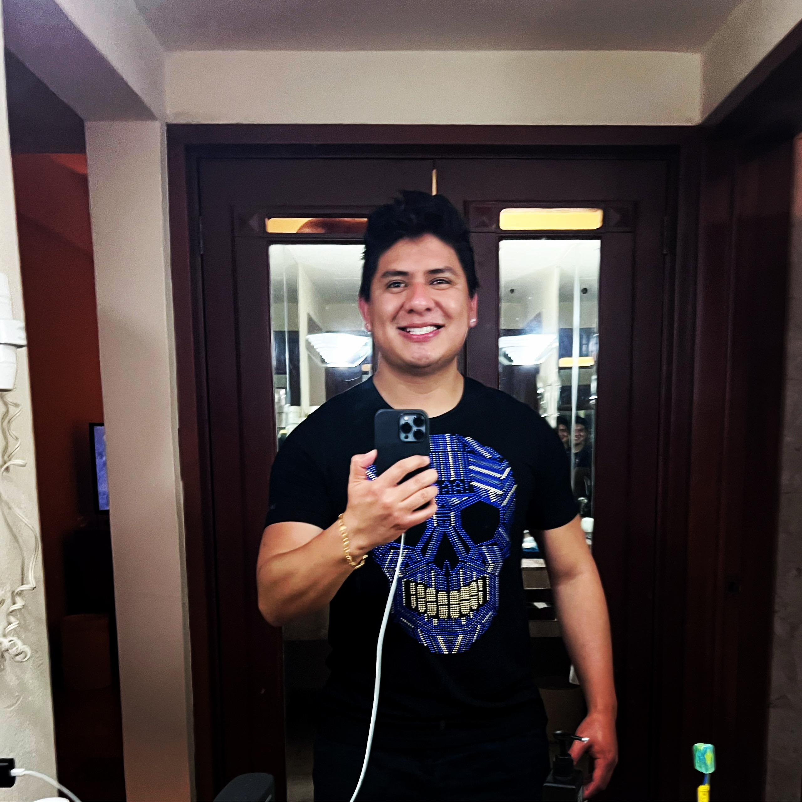

Brandon Pozos

Resumen
Desarrollador Web con más de 10 años de experiencia desarrollando proyectos. Desde páginas webs y hasta ERPs y
CRMs. Soy una persona proactiva y me gusta entregar trabajos de calidad. Escucho activamente y presto atención a
los detalles.
Educación
- UTEL - (2014-2018)
- Licenciatura en Administración de Tecnologías de la Información
- UDEMY - (2024-2024)
- The Complete Web Development Bootcamp
- Harvard - (2025-2025)
- The Best Web Development Course
Experiencia Laboral
Habilidades
- HTML, CSS, PHP: ⭐️⭐️⭐️⭐️⭐️
- Atención al Cliente: ⭐️⭐️⭐️⭐️
- Administración de Proyectos: ⭐️⭐️⭐️⭐️⭐️
Reconocimientos y Certificaciones
Otros
Pasatiempos
Contáctame